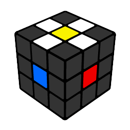
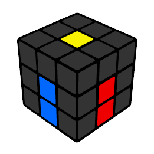
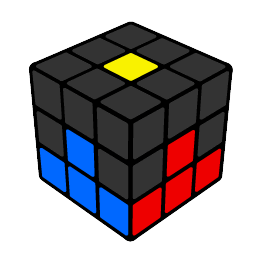
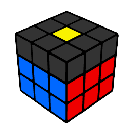
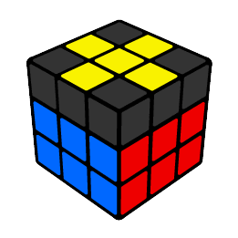
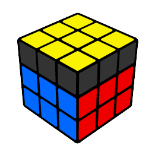
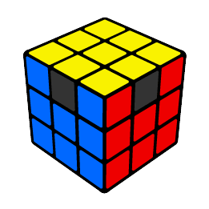
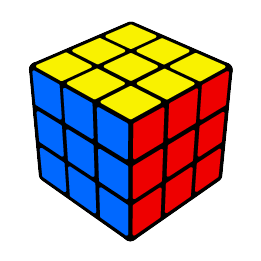

O cubo Mágico é um dos quebra-cabeças mais incríveis do mundo. Todo colorido e tridimensional, que pode
ser
misturado em 43 quintilhões de posições diferentes sendo apenas 1 a correta. Um desafio que intrigou
diversas
gerações e até hoje é considerado o brinquedo mais vendido do mundo.
Agora você pode estar pensando que, com tantas - ou praticamente infinitas - possibilidades, resolver um
Cubo
Mágico deve ser uma tarefa praticamente impossível. E você está quase certo. Apenas "resolver um cubo"
na
tentativa e erro de fato é algo completamente improvável, por isso é muito importante que você aprenda a
técnica
de solução.
Resolver o Cubo Mágico nada mais é do que seguir uma receita. São 8 passos divididos em algumas fórmulas
que são
muito mais simples do que você imagina. Essa sequência de 9 vídeos fazem parte do meu curso e é sem
dúvida o
passo-a-passo mais fácil da internet, disponível gratuitamente pra você aprender agora!

PASSO 1
Preparar a cruz inicial.

PASSO 2
Finalizar a cruz.

PASSO 3
Primeira camada.

PASSO 4
Segunda camada.

PASSO 5
Cruz amarela.

PASSO 6
Face amarela.

PASSO 7
Finalizar as quinas.

PASSO 8
Finalizar os meios.
Assista detalhadamente Aqui!